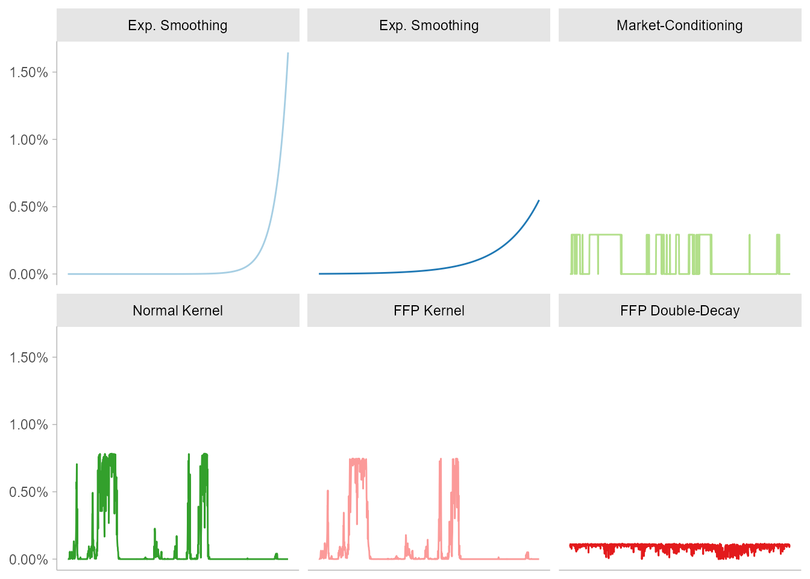
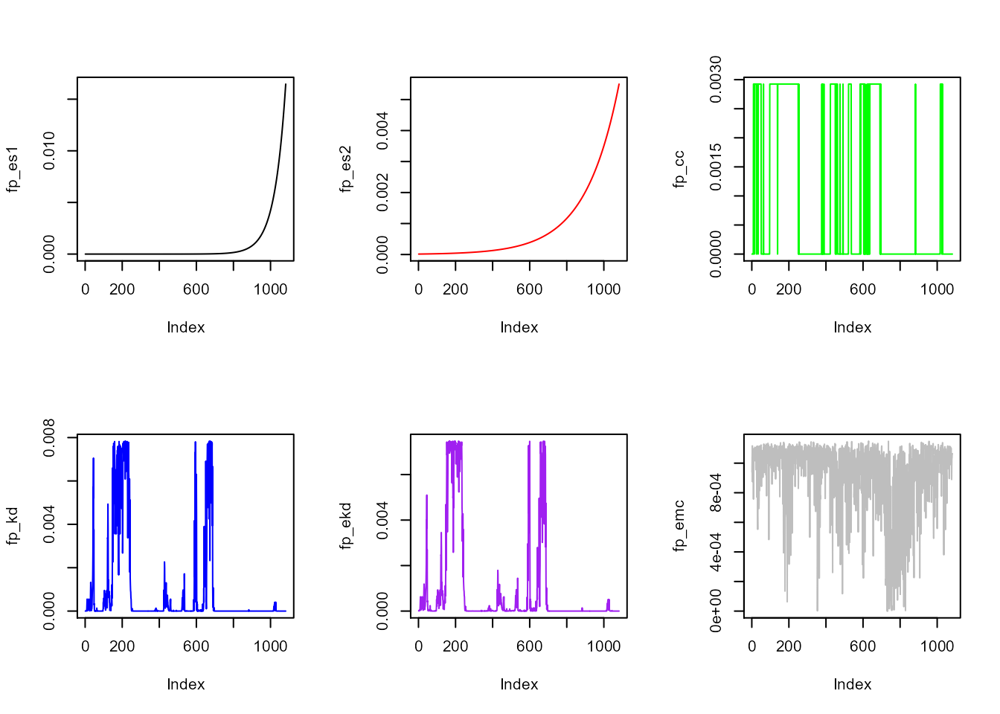

Consider, as in Historical Scenarios with Fully Flexible Probabilities, that we would like to price and stress-test a book of long-short options, in which the underlying is the S&P500 index. To do so, we may like to consider the S&P500 at-the-money implied-volatility (VIX) and also some macroeconomic variables, like gold, inflation, oil prices, etc.
The ffp package comes with the db dataset that contains the information needed to proceed with this exercise:
library("ffp") # load de package
data(db) # load the data
head(db, 2) # take a look on the first observations
#> SWAP2YR SWAP10YR CDXIG OTR S&P 500 Dollar Index Crude Gold VIX
#> [1,] 4.130 4.483 52.417 1218.02 86.30 67.57 445.4 13.57
#> [2,] 4.178 4.523 52.583 1233.39 86.57 65.96 445.5 12.93
#> 10YR Inflation Swap Rate
#> [1,] 2.7525
#> [2,] 2.7250The next chunk of code filters-out the information that are really need to replicate the original paper results.
# used as a macro-conditioning variable
inflation <- db[ , ncol(db), drop = FALSE]
inflation <- inflation[-nrow(inflation), , drop = FALSE]
# Inputs in Black-Scholes option pricing
vix <- db[ , ncol(db) - 1, drop = FALSE]
swap10 <- db[ , 2, drop = FALSE]
sp500 <- db[ , 4, drop = FALSE]
# Log-returns
X <- diff(log(cbind(sp500, vix, swap10)))The inflation object is already in percentage terms and there is no need to change it. The X object, on the other hand, contains the historical returns for three inputs of the Black-Scholes formula: the price of the underlying, the implied-volatility and the risk-free rate. They will be used in a minute to generate scenarios.
The call-price function can be constructed as follows:
call_price <- function(p, k, r, t, s) {
d_1 <- log(p / k) + (r + s * s / 2) * t
d_2 <- d_1 - s * sqrt(t)
c <- p * stats::pnorm(d_1) - k * exp(-r * t) * stats::pnorm(d_2)
c
}The arguments above match the standard in the literature: \(p\) is for price, \(k\) for strike, \(r\) for the risk-free rate, \(t\) for time and \(s\) for the volatility.
The next step we need to separate the last information available for variables that are observable in the market:
# call parameters (fixed in this exercise)
S_0 <- as.vector(tail(sp500, 1))
vol_0 <- as.vector(tail(vix, 1))
rf_0 <- as.vector(tail(swap10, 1))
c(S_0, vol_0, rf_0)
#> [1] 1173.270 17.130 3.813In this exercise, the time-to-expiry and strike prices are allowed to vary:
N <- 20
# call parameters (time-varying in this exercise)
K <- S_0 * (seq(0.8, 1.1, length = N))
Expiry <- (2:(N + 1)) / 252A grid of 20 equally-spaced options that goes from deeply into-the-money to slightly out-of-the money is created. The time-to-expiry is set to decrease from \(21\) to \(2\) days, and it’s assumed that no options will be traded in the expiring day.
Finally, scenarios for the index price (S_T), volatility (vol_T) and risk-free rate (rf_T) are recreated from past history:
The trading opportunities are assessed on a daily basis. It is assumed that at the beginning of the trading day a grid of 10 different in-the-money options are bought and a grid of 10 different at and out-of the money options are sold. The options bought have just a few days to be exercised and behave, more or less, like the underlying. The options short carry a higher vega (a premium that can be consistently earned) at a cost of being sold in gamma, which will hurt in a few number of scenarios - by a lot!
The call_close object differs from call_open because it incorporates the variations in the underlying and it’s adjacent volatility. The time to expiry is discounted by -1 / 252 trading days and, all else constant, drags more value in options that are sold than the options that are bought.
## Market Pricing
PnL <- matrix(NA_real_, nrow(X), N) # pre-allocate for efficiency
for (n in 1:N) {
call_close <- call_price(S_T, K[n], rf_T, Expiry[n] - 1 / 252, vol_T)
call_open <- call_price(S_0, K[n], rf_0, Expiry[n], vol_0)
PnL[ , n] <- as.double(call_close - call_open)
}
## portfolio scenarios
# number of units (contracts/shares/etc)
u <- -rbind(
-matrix(1, N / 2, 1), # symmetrize the payoffs
matrix(1, N / 2, 1) # symmetrize the payoffs
)
# final P&L
PnL_u <- PnL %*% uThe histogram bellow shows the density distribution of this strategy when every scenario has the same probability of occurrence, which is the standard approach:
p_ew <- rep(1 / nrow(X), nrow(X))
plot_info <- pHist(X = PnL_u, p = p_ew)
plot(plot_info[, "x"], plot_info[ , "f"], type = 'h')
Now, fully-flexible probabilities kicks in. Let’s tweak the scenarios that are deemed to be considered most relevant to us (to the trader, etc.) without having to reprice the PnL_u over and over again.
#### Full Information ####
# exponential-smoothing
fp_es1 <- smoothing(X, 0.0166)
fp_es2 <- smoothing(X, 0.0055)
# crisp-conditioning on inflation
fp_cc <- crisp(inflation, condition = as.logical(inflation >= 2.8))
# normal kernel on inflation
fp_kd <- kernel_normal(inflation, mean = 3, sigma = as.double(cov(diff(inflation))))
#### Partial Information ####
# entropy-pooling by kernel-dumping on inflation
fp_ekd <- kernel_entropy(inflation, mean = 3, sigma = as.double(cov(diff(inflation))))
# entropy-pooling by moment-matching
fp_emc <- double_decay(X, decay_low = 0.0055, decay_high = 0.0166)Five different types of probabilities were generated:
pf_es1 and fp_es2 give relatively more weight to recent observations;fp_cc, fp_kd and fp_ekd give more importance for scenarios in which the inflation was near 2.8%-3%;fp_emc generate scenarios using a high decay for covariances and a slow decay for correlations.
par(mfrow = c(2, 3))
plot(fp_es1, type = 'l')
plot(fp_es2, type = 'l', col = "red")
plot(fp_cc, type = 'l', col = "green")
plot(fp_kd, type = 'l', col = "blue")
plot(fp_ekd, type = 'l', col = "purple")
plot(fp_emc, type = 'l', col = "grey")
It’s important to emphasize that any variable that is considered to be relevant for the portfolio manager can be included as a conditioning variable for stress-testing, with multiple restrictions, if it’s the case.
Each different probability combination provides a very different outlook based on expectations, dispersion and quantile measures.
summary <- rbind(
empirical_stats(x = PnL_u, p = p_ew),
empirical_stats(x = PnL_u, p = fp_es1),
empirical_stats(x = PnL_u, p = fp_es2),
empirical_stats(x = PnL_u, p = fp_cc),
empirical_stats(x = PnL_u, p = fp_kd),
empirical_stats(x = PnL_u, p = fp_ekd),
empirical_stats(x = PnL_u, p = fp_emc)
)
rownames(summary) <- c("Standard Approach",
"Exp. Smoothing", "Exp. Smoothing",
"Crisp-Condition", "Kernel-Damping",
"Entropy-Pooling", "Match-Covariance")
knitr::kable(summary, digits = 2)| mu | sd | skewness | kurtosis | VaR | CVaR | |
|---|---|---|---|---|---|---|
| Standard Approach | 382.53 | 230.88 | -0.27 | 5.11 | -287.33 | -396.45 |
| Exp. Smoothing | 393.62 | 182.71 | -1.28 | 5.62 | -259.23 | -297.06 |
| Exp. Smoothing | 388.94 | 202.62 | -0.63 | 5.12 | -259.23 | -307.24 |
| Crisp-Condition | 378.56 | 243.22 | 0.04 | 4.05 | -290.77 | -359.56 |
| Kernel-Damping | 377.17 | 253.69 | -0.03 | 4.60 | -297.10 | -439.25 |
| Entropy-Pooling | 377.80 | 252.61 | 0.02 | 4.53 | -290.77 | -430.23 |
| Match-Covariance | 381.40 | 188.77 | -0.25 | 4.14 | -141.03 | -237.14 |